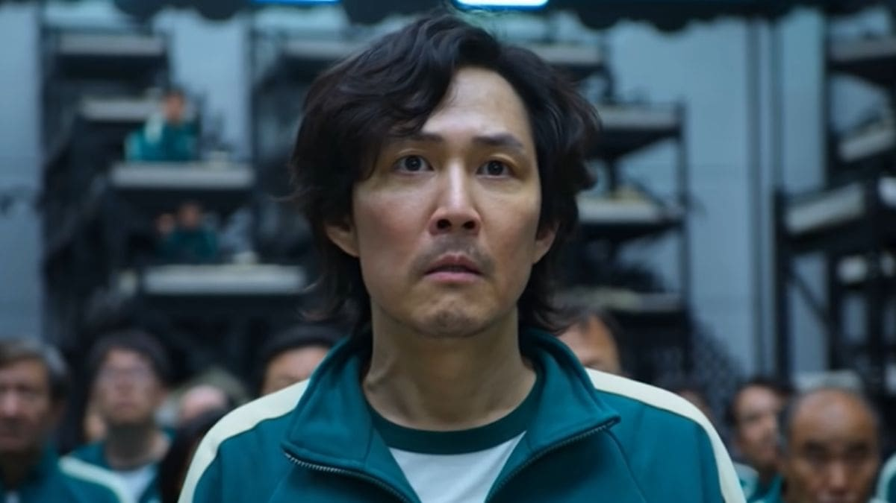
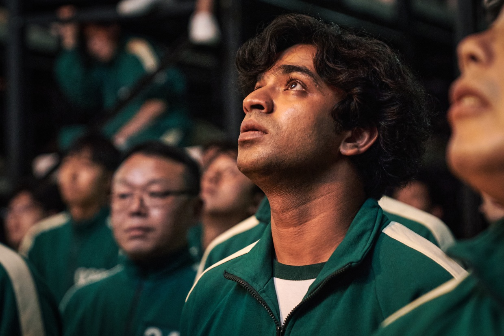
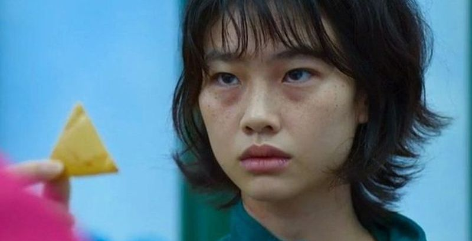
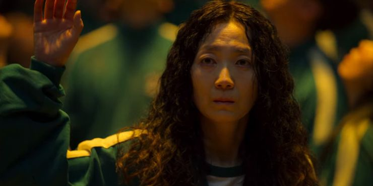

Seong Gi-Hun

Seong Gi-hun , est le principal protagoniste de la série dramatique sud-coréenne Squid Game de Netflix.
Gi-hun est un chauffeur divorcé et endetté, un ancien ouvrier d'assemblage et un joueur obsédé.
Il est invité à jouer à une série de jeux pour enfants, le Squid Game, pour courir la chance de gagner un gros prix en argent.
Il accepte l'offre de régler ses dettes sans connaître les horreurs du jeu.
Abdul Ali

Ali Abdul , est un personnage principal de la première saison de la série télévisée dramatique sud-coréenne Squid Game de Netflix.
Ali est un immigrant illégal du Pakistan qui est venu en Corée du Sud avec sa femme et son enfant,
et a ensuite rejoint le Squid Game pour gagner le prix en argent pour sa famille.
Kang sae-byeok

Kang Sae-byeok , est le tritagoniste de la première saison de la série dramatique sud-coréenne Squid Game.
C'est une transfuge nord-coréenne qui a rejoint le Squid Game pour gagner de l'argent afin de faire sortir son frère
de l'orphelinat et sa mère de la Corée du Nord.
Oh il Nam

Oh Il-nam , également appelé The Host ou Player 001, est le principal antagoniste de la première saison du drame sud-coréen Netflix Squid Game.
Au début, il semblait être un vieil homme ordinaire qui a pu participer au Squid Game en tant que joueur démuni.
En raison de sa tumeur au cerveau, il semblait qu'il ne comprenait pas complètement la situation et qu'il profitait simplement des jeux comme moyen de s'amuser avant sa mort.
Cependant, il a été révélé plus tard qu'il était le créateur et l'hôte des Squid Games,
un véritable cerveau qui héberge les jeux depuis des décennies, plus tard aidé par son bras droit,
le Front Man. Il a été révélé qu'il souhaitait participer au 33e Squid Game car il savait que ce serait le dernier avant sa mort.
Han Mi Nyeo

Han Mi-nyeo , est un personnage principal de la première saison de la série dramatique sud-coréenne Squid Game de Netflix.
Mi-nyeo est une femme manipulatrice qui a rejoint le Squid Game pour gagner le prix en argent afin de résoudre ses problèmes
financiers. Initialement alliée à Jang Deok-su et à son équipe, elle est trahie et jure de se venger du gangster.
Cela l'amène également à rejoindre l'équipe de Seong Gi-hun et Cho Sang-woo.